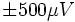
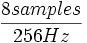

![[Main Page]](../../rsrc/bci2000logo.svg)
gMOBIlabPlusADC
User Reference
Function
The gMOBIlabPlusADC acquires data from a g.MOBIlab+ device. The g.MOBIlab+ is an amplifier/digitizer combination from g.tec medical engineering GmbH/Guger Technologies OEG (http://www.gtec.at) which can transmit data wirelessly via a Bluetooth connection.
g.MOBIlab Hardware
The MOBIlab device supports 8 analog input channels digitized at 16 bit resolution and sampled at a fixed 256 Hz sampling rate. Additionally, 8 digital input lines can be sampled with the analog data, so that behavioral information (e.g., button presses) can be recorded as well. The amplifier has a sensitivity of ,
This device only has one A/D converter and thus samples are digitized at slightly different times. BCI2000 has a feature that can align samples in time (parameter AlignChannels, which needs to be turned on (i.e., AlignChannels needs to be 1).
An additional feature of the MOBIlab+ is 4 digital input lines, and 4 digital input/output lines. The MOBIlab+ source module is configured such that channels 9-16 corresponds to the value of the digital lines, which are configured as input lines. It is possible to configure one digital line in the output configuration, so that the line is pulsed during a data read. This is described further in the parameters section under DigitalOutBlock.
Installation
Prior to using the g.MOBIlab+, the bluetooth software must be installed, and the serial port configured to connect to the device. The instructions can be found in this PDF.
Parameters
COMport
Serial port of the attached MOBIlab+ device, e.g., COM7: This value is determined when the Bluetooth serial port is configured during installation.
SourceCh
The total number of channels. This number can be 1 to 8, or 16. If it is set to between 1 and 8, then channels 1-8 represent 8 analog input channels. If it is set to 16, then channels 1-8 are analog, and channels 9-16 are digital inputs (see DigitalEnable).
SampleBlockSize
Samples per digitized block. A value of 8 corresponds to a BCI2000 system rate of 32 Hz ().
SamplingRate
The sampling rate of the MOBIlab+. This value has to be 256.
InfoMode
Displays information about the MOBIlab+ device.
DigitalEnable
If this is true, then the 8 digital lines are read as inputs. In this case, the total number of channels SourceCh must equal 16.
DigitalOutBlock
If this is true, then digital line 8 is set to output mode, and is set low at the onset of block acquisition, and set high after the block is read. This allows the system timing to be measured, or to synchronize with other external device.
DigitalOutputEx
New in Version 3.0 If an expression is put here, digital output 4 will be set high whenever this expression evaluates true (nonzero) and low when the expression evaluates false (zero). Boolean expressions work well for this (ex. ( (StimulusCode == 0) && Running )).
States
None.
See also
User Reference:DataIOFilter, Programming Reference:GenericADC Class